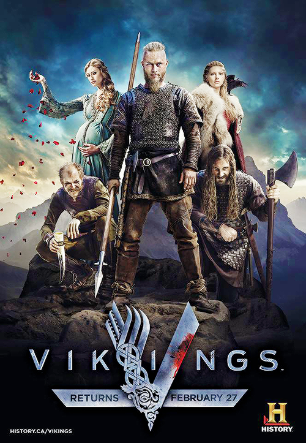
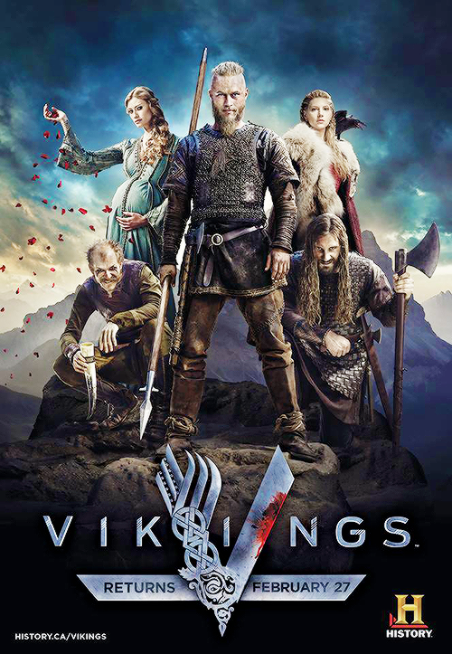

Peliculas favoritas
24
El zorro
Vikingos

Cuando se trata de series, mi fascinación se centra en los emocionantes mundos de agentes secretos y tramas llenas de intriga al estilo de '24', mi serie favorita indiscutible. El suspense palpitante y las tramas llenas de giros inesperados son lo que más me atrae de este género. Además, encuentro gran placer en sumergirme en épocas pasadas a través de series históricas como 'Vikingos', donde la acción se combina con relatos épicos. Sin embargo, no puedo resistirme a una buena dosis de acción pura y adrenalina, por lo que las series de este género también tienen un lugar especial en mi lista de favoritos. Por último, pero no menos importante, las sitcoms me ofrecen un respiro bienvenido con su humor ligero y personajes entrañables, proporcionando un equilibrio perfecto entre el drama y la comedia en mi repertorio televisivo
24
El zorro
Vikingos
